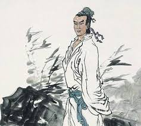

簡介：李賀，字長吉，生於790年河南福昌，卒於816年，享年27歲，別號隴西長吉、龐眉
書客。李賀據說外貌相當特殊，鼻子特別大，眉毛濃密，但身材瘦長，而且指甲留得很長 ，因為體弱多病，十八歲時頭髮就開始變白。李賀經常在太陽東升之時背著行囊、騎著瘦馬離開 家裡四處遊歷，並會在途中觀察景物，將其作為寫詩的題材。

評價與對後世影響：李賀的詩歌因為他獨特的風格而被後世稱之為「長吉體」，在詩壇中獨樹一幟，影 響極大。李賀雖然英年早逝，但作品不少。據記載，晚唐時李賀的詩被整理成集，共233首，而宋朝 以後流傳至今共四卷220首。
「鬼才」和「詩鬼」。說也是對於李賀的評價李賀，是「鬼」有許多原因，李賀是浪漫主義詩人，詩 歌常常涉及神仙鬼怪，而感情卻非曠達清遠，多是悲傷苦悶的，因此，李賀可以說是向死而寫詩，是 在用鬼眼在看人間。與他相對的就是，「詩仙」李白，同樣是浪漫主義，區別就在於感情色彩上。
此外，李賀也被與李白、李商隱兩人並稱為唐代三李。三人都姓李，都是唐朝著名的詩人，李白先於 李賀，而李商隱又晚於他。將李賀與這兩位詩人並稱齊名，本身就對他的肯定和讚譽。